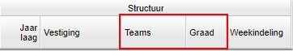
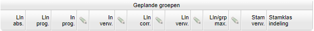
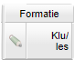
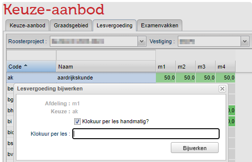
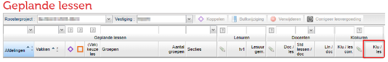

Afdelingsinstellingen
#Afdelingsinstellingen
 Onderwijs > Afdelingen
Onderwijs > Afdelingen
Hier past u standaardinstellingen aan voor specifieke afdelingen. U kunt hier ook een nieuwe afdeling toevoegen of een bestaande verwijderen. Standaardinstellingen voor een afdeling zijn bijvoorbeeld de teams, bevoegdheidsgraad, de pakketdelen zelfstudie, het verwacht aantal stamklassen of de lesvergoeding.
Teams en bevoegdheidsgraad instellen

In het paneel Structuur onder de kolomkop Teams geeft u per afdeling aan bij welk team of welke teams deze hoort. Bij Onderwijs > Schoolstructuur > Teams maakt u teams aan. Om een team te koppelen aan een afdeling dubbelklikt u op de cel en kiest u een team.
In de kolom Graad geeft u de bevoegdheidsgraad van de afdeling aan. Als u de bevoegdheden van docenten vastlegt en een lessenverdeling maakt, wordt duidelijk of een les (on)bevoegd wordt gegeven.
Geplande groepen

Aantal leerlingen
In het paneel Geplande groepen ziet u verschillende leerlingaantallen.
- Leerlingen absoluut (Lln abs): dit aantal bestaat uit de leerlingen die een deelnamepercentage hebben op de afdeling. Deze kolom is niet bewerkbaar.
- Leerlingen prognostisch (Lln prog): dit getal is de som van de leerlingprognoses voor deze afdeling. Gedurende het schooljaar is dit gelijk aan Lln abs. Tijdens de periode van prognoses zijn hier mogelijk verschillen tussen. Deze kolom is niet bewerkbaar.
- Instroom prognostisch (In prog): dit getal is de som van het aantal leerlingen dat instroomt (Leerlingen > Prognoses > Instroom). Deze kolom is niet bewerkbaar.
- Instroom verwacht (In verw): dit getal is in principe de instroom prognose, tenzij de kolom handmatig is aangepast. Deze kolom is bewerkbaar.
- Leerlingen correctie (Lln corr): De inhoud van deze kolom is bewerkbaar. Het gaat hier om een correctie van leerlingen met een indicatie voor LWOO. Bij Leerlingen > Overzicht kan er aangegeven worden welke leerlingen die indicatie hebben. Bij Beheer > Roosterprojecten > Projectinstellingen kunt u aangeven wat de toeslagfactor is voor de LWOO. Eén leerling met LWOO en een toeslagfactor van 50% levert dus een correctie op van 0,5.
- Leerlingen verwacht (Lln verw): dit getal wordt bepaald door de som van Lln abs + Lln Corr. Deze kolom is bewerkbaar.
Pakketdelen voor zelfstudie
U kunt bepaalde pakketdelen niet meetellen in de formatieberekening. In de kolom Pakketdelen zelfstudie geeft u aan om welke pakketdelen dit gaat. Bij Beheer > Portal-inrichting > Keuzes maakt u pakketdelen aan.
Note
Het bekendste voorbeeld zijn leerlingen die een extra vak kiezen, waarvan afgesproken is dat ze niet worden ingeroosterd. Deze leerlingen volgen de lessen van hun zelfstudievak buiten hun eigen rooster om.
Bij geplande groepen ziet u het aantal leerlingen met een zelfstudievak terug in de kolom Lln zelf. Deze leerlingen worden niet meegenomen in het verwacht aantal leerlingen (Lln verw).
Maximale groepsgrootte
De standaard maximale groepsgrootte stelt u in bij de projectinstellingen. Hier kunt u per afdeling van afwijken. Zet hiervoor een vinkje onder het potlood voor de kolom Lln/groep max en pas het getal aan.
Verwacht aantal stamklassen
Het verwacht aantal stamklassen wordt bepaald door het verwacht aantal leerlingen en de maximale groepsgrootte. Hier kunt u per afdeling van afwijken. Zet hiervoor een vinkje onder het potlood voor de kolom Stam verw en pas het getal aan.
Stamklas indeling
Voor de stamklasindeling geeft u aan of het portal of de desktop leidend is.
- Portal leidend: de stamklasindeling wordt door de teamleider bepaald. De roostermaker gebruikt deze indeling vervolgens in de desktop.
- Desktop leidend: de stamklasindeling wordt door de roostermaker in de desktop bepaald. Dit gebeurt in de bovenbouw vaak wanneer er clustergroepen zijn. Als de desktop leidend is, is het niet mogelijk de stamklasindeling in het portal te bewerken.
Aangepaste lesvergoeding
Afdelingsniveau

De standaard lesvergoeding (klokuren per les) stelt u in bij Beheer > Roosterprojecten > Projectinstellingen. U kunt per afdeling een afwijkende lesvergoeding invullen in de kolom Klu/les.
Vakniveau
Ga naar Onderwijs > Keuzeaanbod > Lesvergoeding. Hier kunt u per vak op een afdeling de standaard lesvergoeding aanpassen.

Note
Tip: plaats vakken met een afwijkende lesvergoeding in een eigen sectie. Bij Personeel > Sectieverdeling gebruikt het portal de gemiddelde lesvergoeding in de sectie voor het berekenen van een klokuursaldo op basis van de sectieverdeling.
Lesniveau
Ga naar Onderwijs > Geplande lessen. Hier kunt u per klas, per vak op de afdeling de standaard lesvergoeding aanpassen.
